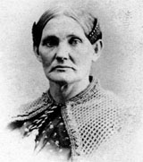

|

|

|
|
|
Mary Ann Bickerdyke was a beloved nurse and fundraiser
during the Civil War. She grew up in Ohio as Mary Ann Ball,
moving between a number of relatives after her mother died
when she just a toddler. Married in 1847 to Robert
Bickerdyke, Mary Ann migrated with her husband to Illinois a
decade later. Widowed in 1859, Bickerdyke supported herself
and her three children by practicing botanic medicine.
During a church service in 1861, Bickerdyke learned about
the harsh conditions of young volunteer soldiers suffering
from typhoid and dysentery. Church members proceeded to
organize a relief fund, and Bickerdyke volunteered to
deliver it. This mission convinced Bickerdyke to commit
herself to caring for Union soldiers for the rest of the
war. She threw herself into relief work on her own
initiative, doing whatever needed to be done. Ignoring
protocol and defying male authority, she cleaned, nursed and
fed thousands of sick and wounded men, both at hospital
camps and at the front lines of battle.
Bickerdyke acquired her name of "Mother Bickerdyke" from
the wounded soldiers at the battle of Shiloh in April of
1862. She soon became an agent of the United States Sanitary
Commission, and she gained a measure of fame when the
country learned of her extraordinary dedication to the
wounded at many battlefields and hospitals.
Along with her nursing duties on the front lines with
Grant's and Sherman's armies, Bickerdyke also embarked on
speaking tours in the Midwest to raise money and obtain
food. Bickerdyke was with Sherman's army in North Carolina
when the war was finally won, and she joined in the North's
victory parade in 1865 in Washington D.C.
After the war, Bickerdyke worked on various benevolent
causes. She died in 1901 in Kansas after spending her final
years on her son's farm.
Source: Joan Waugh, ed., Facts on File Encyclopedia of American
History: Civil War and Reconstruction, 1856 to 1869 (New York: Facts on
File, 2003), 28-29.
|